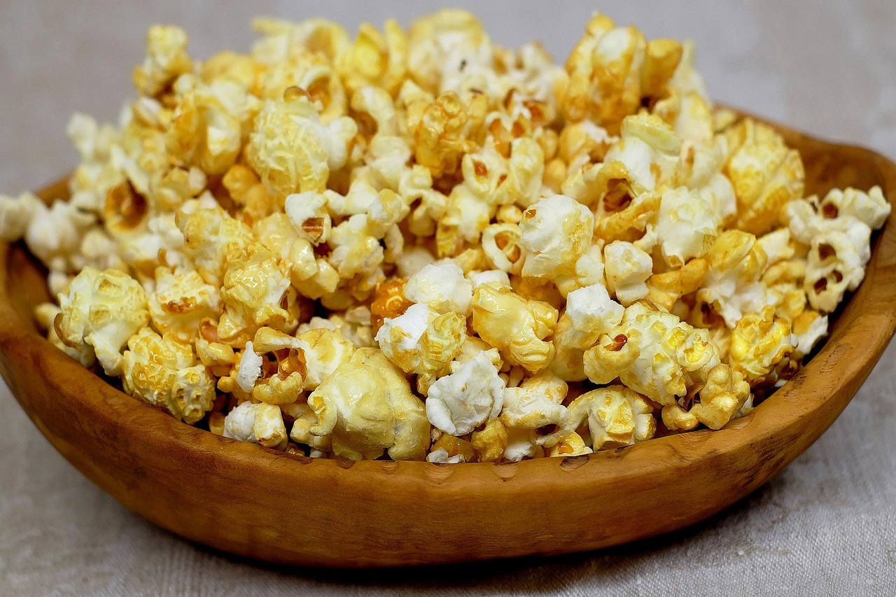

Popcorn

The simple recipe for the perfect combination of butter and salt it will be the best snack during your next movie watching or series binging session.
Ingridients
- 3 Tbsp Coconut Oil
- /3 Cup of high quality popcorn kernels
1
- 1 Tbsp of butter
- Salt to taste
Instructions
- Heat the oil in a 3-quart saucepan on medium high heat. If you are using coconut oil, allow all of the solid oil to melt.
- Put 3 or 4 popcorn kernels into the oil and cover the pan.
- When the kernels pop, add the rest of the 1/3 cup of popcorn kernels in an even layer. Cover, remove from heat and count 30 seconds. (Count out loud; it's fun to do with kids.) This method first heats the oil to the right temperature, then waiting 30 seconds brings all of the other kernels to a near-popping temperature so that when they are put back on the heat, they all pop at about the same time.
- Return the pan to the heat. The popcorn should begin popping soon, and all at once. Once the popping starts in earnest, gently shake the pan by moving it back and forth over the burner. Try to keep the lid slightly ajar to let the steam from the popcorn release (the popcorn will be drier and crisper). Once the popping slows to several seconds between pops, remove the pan from the heat, remove the lid, and dump the popcorn immediately into a wide bowl. With this technique, nearly all of the kernels pop, and nothing burns.
- If you are adding butter, you can easily melt it by placing the butter in the now empty, but hot pan. Note that if you let the butter get just a little bit brown, it will add an even more intense, buttery flavor to the butter and to your popcorn. (Here's more info on how to brown butter.) Just drizzle the melted butter over the popcorn and toss to distribute.
- Add salt to taste